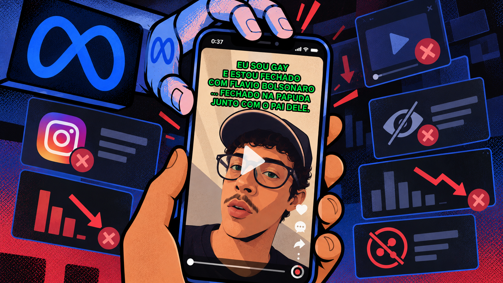

Meta removeu vídeo e bloqueou mensagens de perfil LGBTQIA+ durante o segundo turno das eleições presidenciais

Ilustração de um celular com vídeo de mobilização política, cercado por símbolos da Meta, do Instagram e de restrições de conteúdo.
Publicação divulgava o Acervo Lula, iniciativa popular e independente de apoio à candidatura de Lula e oposição a Flávio Bolsonaro (PL), sem vínculo com a campanha oficial. Vídeo ultrapassava 400 mil visualizações quando foi removido; penalidades foram revertidas após recursos, sem esclarecimentos sobre os motivos que levaram à sua aplicação.
São Paulo, 16 de outubro de 2026 — Em meio aos questionamentos sobre a atuação da Meta nas eleições presidenciais brasileiras, o perfil de comunicação política e ativismo LGBTQIA+ @historialgbtqia_ teve um vídeo de mobilização eleitoral removido do Instagram e, dois dias depois, sofreu um bloqueio no envio de mensagens diretas, inicialmente previsto para durar 30 dias. As duas penalidades foram revertidas após recursos apresentados pelo próprio aplicativo. Seguidores também relataram dificuldades para curtir, comentar e compartilhar publicações.
Os episódios ocorreram entre 11 e 13 de outubro, durante o segundo turno da disputa presidencial entre Luiz Inácio Lula da Silva (PT) e Flávio Bolsonaro (PL), em um período marcado por denúncias de restrições a conteúdos eleitorais, questionamentos sobre os sistemas de recomendação das plataformas e intervenções do Tribunal Superior Eleitoral (TSE).
O vídeo removido, publicado em 9 de outubro, divulgava o Acervo Lula (acervolula.com.br), iniciativa popular e independente que reúne materiais audiovisuais, grupos de mobilização e ferramentas de organização política em apoio à candidatura de Lula e em oposição a Flávio Bolsonaro. O projeto não possui vínculo institucional com a campanha oficial, partidos ou comitês eleitorais.
Segundo a administração do perfil, o Instagram retirou a publicação de circulação em 11 de outubro, sob alegação de conteúdo de cunho sexual. Após recurso apresentado pelo próprio aplicativo, o conteúdo foi restabelecido no dia 12.
A remoção ocorreu quando a publicação acumulava centenas de milhares de visualizações e mantinha crescimento expressivo, levantando dúvidas sobre os possíveis efeitos de decisões de moderação na circulação de conteúdos políticos, especialmente durante um processo eleitoral.
Vídeo ultrapassava 400 mil visualizações antes da remoção
Dados extraídos do Instagram Insights mostram que a publicação havia alcançado 439 mil visualizações em 10 de outubro. No dia seguinte, quando ocorreu a remoção, os registros históricos indicavam 455 mil e, posteriormente, 504 mil visualizações acumuladas.
Em 12 de outubro, após o restabelecimento, os registros passaram por 515 mil e chegaram a 614 mil visualizações. O vídeo alcançou 697 mil no dia 13, 830 mil no dia 14 e aproximadamente 887 mil no dia 15.
A publicação também apresentava indicadores expressivos de engajamento, com taxa de compartilhamento de 16,9%, taxa de curtidas de 24,6% e tempo médio de visualização de 28 segundos. O próprio Instagram classificava as taxas de compartilhamento e curtidas como superiores aos parâmetros de referência exibidos pela ferramenta.
Os registros mostram períodos de desaceleração próximos à indisponibilidade do conteúdo, seguidos de retomada do crescimento. Embora não seja possível estabelecer uma relação causal direta entre a remoção e as oscilações observadas, a administração considera que a interrupção pode ter comprometido oportunidades de circulação durante um momento relevante de mobilização eleitoral.
Os dados não permitem calcular quantas visualizações eventualmente deixaram de ocorrer, tampouco demonstram interferência deliberada nos sistemas de recomendação. Ainda assim, o episódio traz uma questão sobre os efeitos de penalidades posteriormente revertidas: o restabelecimento de uma publicação não significa, necessariamente, a recuperação das oportunidades de circulação durante sua indisponibilidade.
Meta impôs bloqueio de mensagens inicialmente previsto para 30 dias
Em 13 de outubro, o perfil recebeu uma segunda penalidade. Dessa vez, o Instagram restringiu o envio de mensagens diretas, com encerramento inicialmente previsto para 12 de novembro de 2026.
A justificativa apresentada foi uma suposta violação das regras sobre práticas comerciais proibidas. A notificação mencionava a possibilidade de atividades destinadas a induzir terceiros a entregar dinheiro, bens ou informações pessoais, mas não identificava qual publicação, mensagem ou comportamento teria motivado a medida.
Após novo recurso e o fornecimento das informações solicitadas pelo aplicativo, a restrição foi removida ainda em 13 de outubro.
Capturas de tela documentam tanto a aplicação quanto a reversão da penalidade. Para a administração do perfil, a sequência levanta dúvidas sobre a fundamentação e a proporcionalidade das restrições, considerando que uma punição inicialmente prevista para durar aproximadamente um mês foi cancelada após revisão no mesmo dia.
Seguidores também relataram dificuldades para interagir
Os problemas não ficaram restritos às funcionalidades utilizadas pela administração do perfil.
Mensagens enviadas por seguidores relatam tentativas frustradas de curtir, comentar, salvar e compartilhar publicações. Em diferentes conversas, usuários também questionaram o desaparecimento de vídeos anteriormente compartilhados, enquanto o aplicativo informava que determinadas mídias já não estavam disponíveis.
Além das capturas de tela e fotografias que documentam essas ocorrências, a administração do perfil disponibilizará à imprensa dois vídeos produzidos por seguidores diferentes, nos quais são registradas tentativas de interação com publicações do perfil sem sucesso. Um dos registros foi produzido por captura direta da tela do aplicativo; o outro, por filmagem externa de um celular, permitindo observar as tentativas de interação e as respostas apresentadas pela plataforma.
Os dois vídeos, acompanhados de capturas de tela, fotografias e demais registros documentais, integrarão o dossiê de evidências que será encaminhado aos veículos de comunicação para subsidiar a apuração jornalística.
A origem dessas ocorrências ainda não foi identificada. A documentação disponível não permite determinar se as dificuldades estão associadas a mecanismos de restrição do perfil, falhas temporárias do Instagram ou outras condições técnicas.
Os relatos, contudo, ampliam o escopo da apuração, uma vez que as dificuldades também foram percebidas por pessoas que tentavam acessar e compartilhar publicações da conta.
Restrições eleitorais colocam Meta sob questionamento
O caso ocorre em um momento de crescente escrutínio sobre a atuação da Meta nas eleições brasileiras. Nas últimas semanas, veículos de comunicação, organizações sociais e representantes de campanhas eleitorais relataram episódios envolvendo remoções de publicações, restrições de alcance e diferenças no funcionamento de ferramentas digitais.
Em 2 de outubro, a Mídia NINJA denunciou a restrição de uma publicação jornalística pelo Instagram, sob justificativa relacionada à legislação eleitoral brasileira, sem indicação específica do dispositivo supostamente violado.
Em 11 de outubro, o Brasil de Fato noticiou que o Tribunal Superior Eleitoral havia solicitado esclarecimentos à Meta sobre alegações de restrições à distribuição de conteúdos da campanha de Lula. A determinação também abordou sistemas de recomendação e a preservação de registros internos da plataforma.
Dois dias depois, o Fórum das Entidades Nacionais dos Servidores Públicos Federais (Fonasefe) denunciou a remoção de 13 publicações com críticas a Flávio Bolsonaro. Segundo a organização, parte das medidas teria ultrapassado o alcance de uma determinação judicial relacionada ao conteúdo.
Em 14 de outubro, testes publicados pelo Brasil de Fato identificaram diferenças nas respostas da Meta AI a solicitações semelhantes de produção de materiais eleitorais envolvendo Lula e Flávio Bolsonaro.
O debate ganhou uma nova dimensão em 15 de outubro, quando o ministro Marco Aurélio Bellizze, do TSE, determinou que a Meta adotasse critérios igualitários para as duas candidaturas, sob pena de multa diária de R$ 500 mil em caso de descumprimento. A decisão abordou o funcionamento da inteligência artificial, a distribuição de conteúdos políticos, as restrições publicitárias e os mecanismos de fiscalização da plataforma.
A determinação não trata especificamente do perfil @historialgbtqia_, mas evidencia a atenção da Justiça Eleitoral às condições de circulação de conteúdos políticos nas plataformas digitais durante o segundo turno.
A Meta reconheceu problemas técnicos relacionados a anúncios e publicações eleitorais, mas negou favorecer ou prejudicar deliberadamente qualquer candidatura. A empresa também informou ter adotado medidas adicionais para adequar suas ferramentas às regras eleitorais brasileiras.
Os casos possuem circunstâncias distintas e não permitem concluir que exista uma ação coordenada contra os perfis mencionados. Em conjunto, porém, demonstram a relevância pública das discussões sobre a aplicação das políticas de moderação, a transparência dos sistemas digitais e os mecanismos de contestação disponíveis aos usuários.
A discussão também alcança a soberania digital brasileira. Em julho de 2026, o Brasil de Fato documentou pressões de parlamentares republicanos dos Estados Unidos contra iniciativas brasileiras de regulamentação das grandes empresas de tecnologia. Para integrantes do governo brasileiro ouvidos pelo veículo, a movimentação representava uma tentativa de ingerência nas decisões regulatórias nacionais.
“O poder das gigantes de tecnologia dos Estados Unidos de silenciar vozes políticas e interromper a mobilização eleitoral por meio de sistemas algorítmicos opacos está abrindo caminho para uma nova forma de interferência estrangeira nas eleições e, possivelmente, de supressão digital do voto. Restabelecer uma publicação não reverte o ostracismo digital imposto a comunidades nem recupera as oportunidades perdidas de participação no debate democrático. Na Repro Uncensored, documentamos centenas de casos de suspensões e restrições no atual contexto eleitoral brasileiro, levantando sérias preocupações sobre o papel da moderação algorítmica e de atores contrários aos direitos humanos na definição do discurso político e do futuro das nossas democracias. As empresas de tecnologia dos Estados Unidos não podem se tornar guardiãs sem responsabilização da participação cívica, nem instrumentos de interferência política e estrangeira. A Meta deve ser responsabilizada por suas decisões e pelo impacto delas sobre os direitos e as liberdades fundamentais.”
Possíveis medidas judiciais estão em estudo
Diante da sequência de restrições, a administração do perfil @historialgbtqia_ informa que está reunindo a documentação disponível e estuda, sob orientação jurídica, a adoção de medidas judiciais contra a Meta.
A avaliação considera os fundamentos apresentados para as penalidades, os procedimentos de revisão, os relatos de dificuldades de interação e os possíveis efeitos sobre a circulação das publicações. As evidências estão sendo organizadas para subsidiar a análise jurídica sobre eventuais instrumentos de responsabilização e reparação previstos na legislação brasileira.
A discussão envolve também as condições de participação política no ambiente digital. No Estado Democrático de Direito brasileiro, manifestações de apoio ou oposição a candidaturas e iniciativas independentes de mobilização integram o exercício das liberdades de expressão, associação e participação política, observados os limites previstos na legislação eleitoral.
A necessidade de moderação para enfrentar fraudes, desinformação e conteúdos ilícitos não afasta a importância de critérios transparentes e procedimentos proporcionais, sobretudo quando as decisões incidem sobre publicações relacionadas ao debate eleitoral.
Para a administração do perfil, permanecem questões sobre quais regras motivaram as penalidades, quais elementos fundamentaram sua aplicação e o que levou às posteriores reversões.
O caso chama atenção para uma dimensão frequentemente menos visível da moderação digital: os efeitos que uma restrição pode produzir mesmo quando é posteriormente cancelada. Em períodos eleitorais, quando a circulação de informações e a mobilização política possuem relevância imediata, compreender esses efeitos é parte importante do debate sobre transparência e responsabilidade das plataformas.
Sobre a Repro Uncensored
A Repro Uncensored é a principal organização global sem fins lucrativos, registrada nos Estados Unidos sob a seção 501(c)(3), dedicada a documentar a censura digital e a atuar nas áreas de pesquisa, estratégia jurídica, incidência política e iniciativas culturais para proteger a liberdade de expressão.
A organização já documentou milhares de casos de censura em mais de 50 países e contribuiu para a recuperação de dezenas de contas que alcançam milhões de pessoas.
Desde o primeiro semestre de 2026, a Repro Uncensored vem adotando medidas legais contra a Meta nos Países Baixos, como parte de uma estratégia mais ampla para promover a responsabilização jurídica e política das plataformas e combater a censura sistêmica, em colaboração com organizações da sociedade civil e formuladores de políticas públicas.
Sobre a História LGBTQIA+
A História LGBTQIA+ é uma iniciativa da sociedade civil dedicada à pesquisa, produção de dados, documentação e preservação da memória da comunidade LGBTQIA+. A iniciativa atua no registro, na organização e na difusão de histórias, experiências e mobilizações que atravessam o passado, o presente e o futuro dessa população, com o objetivo de ampliar o acesso à informação, fortalecer a memória coletiva, promover direitos e contribuir para a defesa da comunidade LGBTQIA+.
Fontes e referências
- MÍDIA NINJA. Às vésperas da eleição, Meta remove publicação da Mídia NINJA sobre embaixada dos Estados Unidos no Brasil. 2 out. 2026.
- BRASIL DE FATO. TSE manda Meta esclarecer restrições a postagens da campanha de Lula. 11 out. 2026.
- BRASIL DE FATO. Além da determinação do TSE, Meta remove 13 postagens com críticas a Flávio Bolsonaro sobre serviço público. 13 out. 2026.
- BRASIL DE FATO. IA da Meta bloqueia criação de imagens com nome de Lula e libera peças com Flávio. 14 out. 2026.
- BRASIL DE FATO. Campanha de Lula aciona TSE contra Meta e cria canal para denúncias de censura nas redes. 14 out. 2026.
- FOLHA DE S.PAULO. TSE atende a Lula e manda Meta dar a ele tratamento igual ao de Flávio sob pena de multa de R$ 500 mil. 15 out. 2026.
- BRASIL DE FATO. Planalto vê ofensiva parlamentar dos EUA contra regulação de Big Techs como ingerência e pressão desleal. 24 jul. 2026.
Contato para imprensa
Rennan Metsi
Pesquisa e Relações Públicas | Data2Comms
E-mail: rennanmetsi@data2comms.com.br
Site: https://data2comms.com.br/
Material complementar: Solicite o dossiê de evidências com capturas de tela, fotografias, registros de desempenho do Instagram Insights, notificações de penalidades e reversões, além de dois vídeos que documentam tentativas frustradas de interação realizadas por seguidores do perfil.